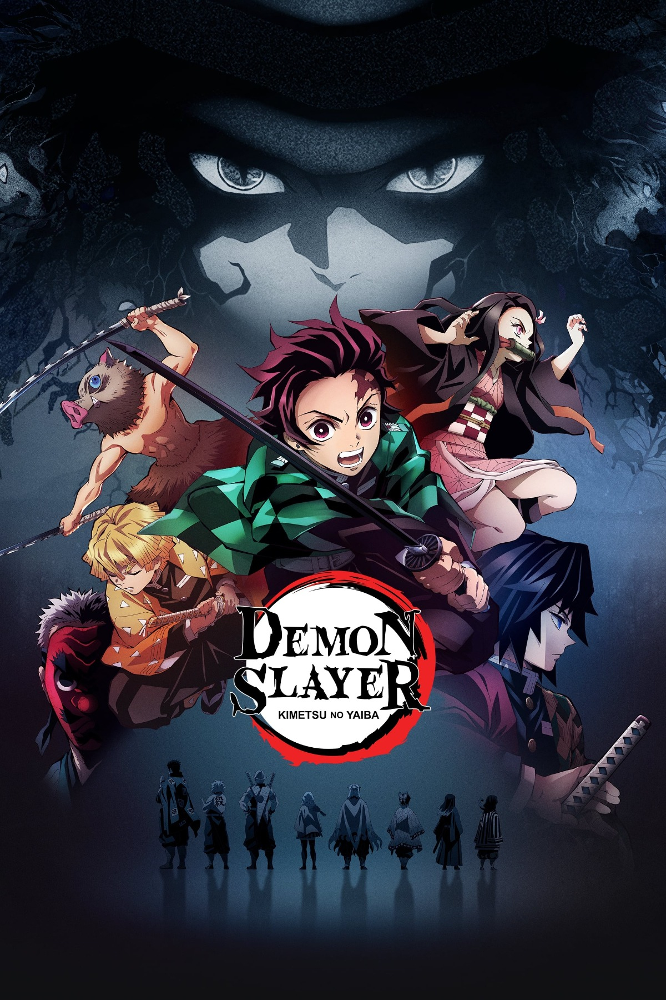
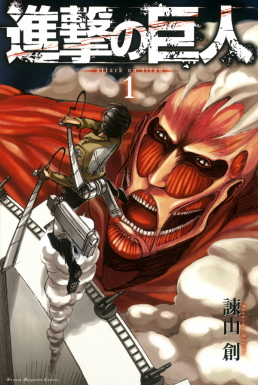
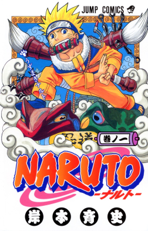

Demon Slayer

Demon Slayer tells the story of Tanjiro Kamado, a young boy who becomes a demon slayer after his family is attacked.
Personal Rating: 10/10
A personal ranking of my favorite animes, with descriptions, images, ratings, and trailers.

Demon Slayer tells the story of Tanjiro Kamado, a young boy who becomes a demon slayer after his family is attacked.
Personal Rating: 10/10

Attack on Titan is an intense anime about humanity fighting for survival against giant creatures called Titans.
Personal Rating: 9.8/10

Naruto follows the journey of Naruto Uzumaki, a young ninja who dreams of becoming Hokage and earning the respect of his village.
Personal Rating: 9.5/10

One Piece is an adventure anime about Monkey D. Luffy and his crew searching for the legendary treasure known as the One Piece.
Personal Rating: 9.3/10

Jujutsu Kaisen follows Yuji Itadori as he enters the world of cursed energy and powerful sorcerers.
Personal Rating: 9/10